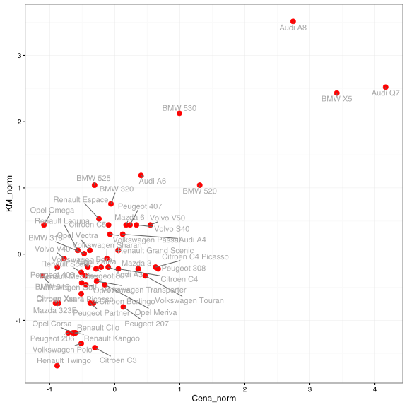
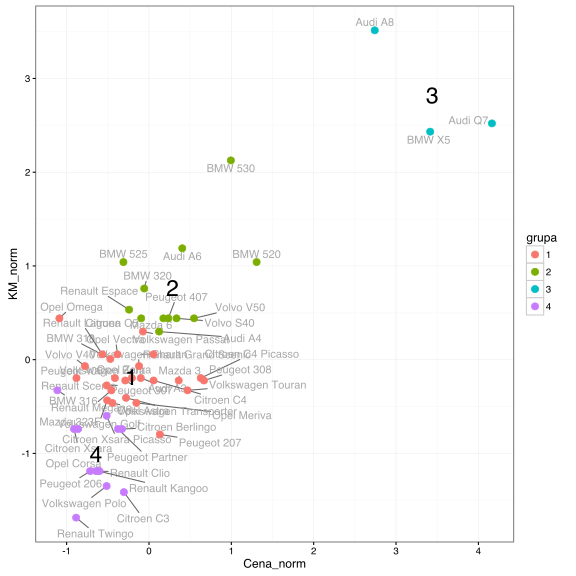

Jak szukać partycji w oparciu o metodę k-średnich?
Algorytm k-średnich dzieli zbiór obserwacji na rozłącznych grup (czasami nazywanych skupiskami), takich że: suma odległości obiektów wewnątrz tej samej grupy jest możliwie mała a pomiędzy grupami możliwie duża.
Jest to dosyć mglisty cel, który można realizować na różne sposoby. Zobaczmy więc jak jest on realizowany w przypadku algorytmu k-średnich.
Przyjmijmy, że przypisujemy do grup indeksowanych liczbami . Niech funkcja oznacza przypisanie obiektu do grupy. Dodatkowo wprowadźmy następujące oznaczenia: to suma odległości obiektów wewnątrz tych samych grup (within), a to suma odległości obiektów pomiędzy grupami (between).
Suma obu tych wartości jest stała i równa sumarycznej odległości pomiędzy wszystkimi obiektami. Skoro suma jest stała, to minimalizacja czy to czy jest równoważna minimalizacji samego . Jeżeli dodatkowo za odległość wybierzemy kwadrat odległości Euklidesowej, to otrzymamy następujący wzór na sumę odległości w grupach
Więcej informacji o tym wzorze znaleźć można w rozdziale 14.3.5 The Elements of Statistical Learning Trevor Hastie, Robert Tibshirani, Jerome Friedman.
Jeżeli obserwacji jest niebanalna liczba, nie sposób sprawdzić wszystkich możliwych podziałów obiektów na grup, więc siłowo wartości nie możemy zminimalizować. Zazwyczaj robi się to poprzez algorytm iteracyjnej poprawy wartości przez poprawianie przypisywania do grup.
Algorytm k-średnich
Wybierz losowe przypisanie do grup (lub losowe środki grup).
Dla określonego przypisania do grup wartość jest minimalizowana, jeżeli środki grup opisane są przez średnie w grupach. Wyznacz środki poszczególnych grup jako średnie
Dla określonych średnich wartość jest minimalizowana, jeżeli każda obserwacja jest przypisana do grupy wyznaczonej przez najbliższą średnią
Powtarzaj kroki 1-2 tak długo póki zmienia się przypisanie do grup .
Powyższy algorytm z kroku na krok minimalizuje funkcję , ale może utknąć w lokalnym minimum tej funkcji. Dlatego zaleca się wystartowanie go z kilku różnych losowych konfiguracji początkowych.
Przykład
Analizę grup przeprowadzimy na wybranych 57 modelach aut, opierając się na zbiorze danych auta2012 z pakietu PogromcyDanych. Policzyliśmy wcześniej na podstawie dwuletnich ofert, średnią cenę, przebieg, pojemność silnika, liczbę koni mechanicznych i frakcję aut z silnikiem diesla.
Wyznaczmy podział na grupy bazując na dwóch cechach – cena i liczba koni mechanicznych. Ponieważ są to skośne zmienne na bardzo różnych skalach, więc najpierw obie zmienne unormujemy by odległość Euklidesowa miała jakikolwiek sens. W tym przypadku normalizacja polega na ustandaryzowaniu (odjęciu średniej, podzieleniu przez odchylenie standardowe) pierwiastka z każdej z tych cech.
auta <- archivist::aread("pbiecek/Przewodnik/arepo/bf2846de03bc8434d234b08fd2e31694")
auta$nazwa <- rownames(auta)
auta$Cena_norm <- scale(sqrt(auta$Cena))
auta$KM_norm <- scale(sqrt(auta$KM))
head(auta)
## Cena Przebieg Pojemnosc KM diesle nazwa Cena_norm
## Audi A3 20900.0 164450 1896 110 66.9 Audi A3 -0.0995477
## Audi A4 25311.4 182000 1900 130 75.7 Audi A4 0.1228525
## Audi A6 31500.0 185000 2496 170 82.5 Audi A6 0.4043397
## Audi A8 109000.0 129380 4134 300 68.1 Audi A8 2.7415782
## Audi Q7 179000.0 72000 3000 240 89.1 Audi Q7 4.1642976
## BMW 316 6150.0 186000 1600 105 1.7 BMW 316 -1.1121946
## KM_norm
## Audi A3 -0.1961830
## Audi A4 0.2999017
## Audi A6 1.1885387
## Audi A8 3.5135527
## Audi Q7 2.5207084
## BMW 316 -0.3271113
Zobaczmy na wykresie jak wyglądają modele aut na tych dwóch wystandaryzowanych skalach.
library(ggrepel)
ggplot(auta, aes(Cena_norm, KM_norm, label=nazwa)) +
geom_point(size=3, color="red") +
geom_text_repel(color="darkgrey") + theme_bw()

Przyjmijmy, że chcemy znaleźć 4 grupy.
Liczba wszystkich możliwych przypisań rośnie jak funkcja rzędu (dokładna liczba podana jest we wzorze 14.30 ww. źródła) a więc raczej szybko. Z tego powodu, do znalezienia podziału na grupy pozostają nam heurystyki, takie jak opisany ww. algorytm.
Do znalezienia podziału wykorzystajmy funkcję kmeans().
grupy <- kmeans(auta[,c("Cena_norm", "KM_norm")],
centers = 4, nstart = 10)
Wynikiem jest lista, zawierająca między innymi pole cluster z informacją o przypisaniach kolejnych obserwacji oraz centers z informacją o zidentyfikowanych środkach grup.
head(grupy$cluster)
## Audi A3 Audi A4 Audi A6 Audi A8 Audi Q7 BMW 316
## 3 4 4 2 2 1
grupy$centers
## Cena_norm KM_norm
## 1 -0.6445280 -1.0066262
## 2 3.4400810 2.8222961
## 3 -0.2142881 -0.1830422
## 4 0.2846520 0.7662755
Wykorzystajmy obie te wartości aby narysować auta po podzieleniu na grupy. Dodatkowo dodaliśmy numery grup zaczepione w środkach grup.
auta$grupa <- factor(grupy$cluster)
centra <- data.frame(grupy$centers)
centra$nazwa <- centra$grupy <- factor(1:nrow(centra))
ggplot(auta, aes(Cena_norm, KM_norm, color=grupa, label=nazwa)) +
geom_text_repel(color="darkgrey") +
geom_point(size=3) +
geom_text(data=centra, size=8, color="black") + theme_bw()

Z wyznaczonego podziału na grupy można wyłuskać takie statystyki jak , i ich sumę, łączną sumę kwadratów. Mogą być one przydatne do celów diagnostycznych.
grupy$withinss
## [1] 2.509780 1.733690 6.235331 5.545342
grupy$betweenss
## [1] 87.97586
grupy$totss
## [1] 104
Jak wybrać liczbę grup?
Najlepiej mieć jakieś wstępne oczekiwania dotyczące liczby grup, wynikające np. z natury analizowanego problemu lub ograniczeń w których pracujemy (jesteśmy w stanie później niezależnie analizować określoną liczbę grup).
Jeżeli nie mamy takiego komfortu, to często analizuje się wartości funkcji jako funkcję liczby grup.
A następnie organoleptycznie określa się gdzie spadek miary jest wystarczająco duży by dodać kolejną grupę.
Np. na poniższym wykresie, wygląda na to że do 4, 5 grup funkcja maleje szybko, ale później już nie tak szybko, a więc może 4 grupy to był dobry wybór?
Kmax <- 10
WC <- sapply(2:Kmax, function(k) {
grupy <- kmeans(auta[,c("Cena_norm", "KM_norm")],
centers = k, nstart = 10)
sum(grupy$withinss)
})
WC
## [1] 38.930412 21.885048 16.070026 11.355036 8.883000 7.467007 6.024751
## [8] 5.235116 5.359783
ggplot(data.frame(K=factor(2:Kmax), WC), aes(K, WC)) +
geom_bar(stat="identity")

Zadania
Może 4 grupy to był dobry wybór a może nie. Wczytaj te dane i zobacz jak wygląda podział na grupy jeżeli szukać 3 a jak gdy szukać 5 grup?
Powtórz te analizy kilkukrotnie, czy za każdym razem otrzymujesz takie samo przypisanie do grup?
Jak wygląda zależność pomiędzy grupami znalezionymi dla a tymi znalezionymi dla ? Czy to stabilne zachowanie?